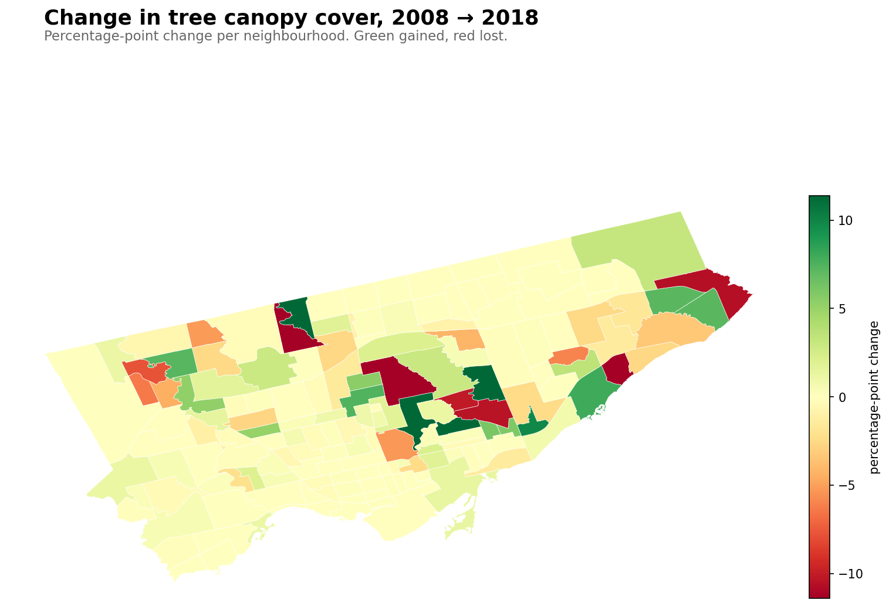
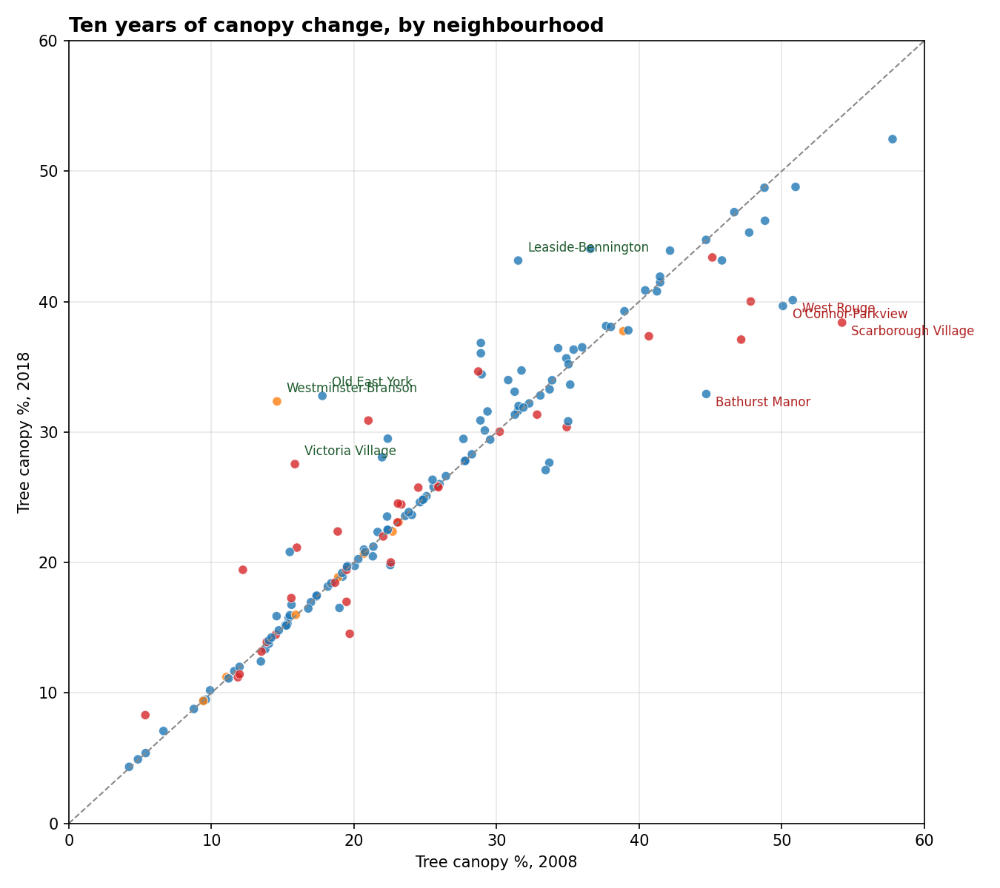
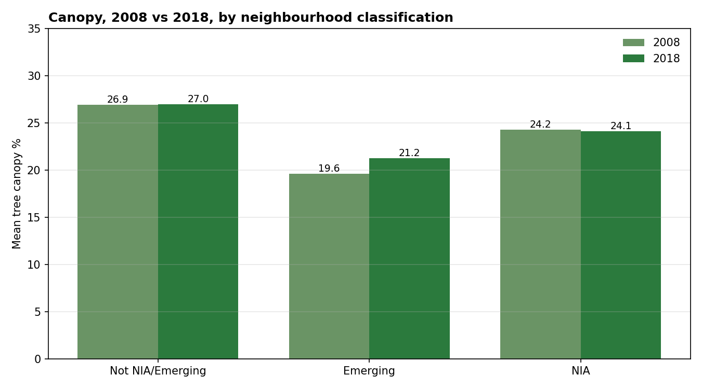

A decade of standing still — how Toronto's canopy survived the ash catastrophe
Between 2008 and 2018, Toronto lost an estimated 80,000 mature ash trees to the emerald ash borer. The street-tree inventory went from about 90,000 ashes pre-EAB to 9,966 today — an ~89% reduction. Mature ash crowns average 10-15 metres wide; that's on the order of 15 km² of canopy silently falling out of the city over a decade.
Over the same decade, Toronto's overall tree canopy cover went from 25.84% to 25.89%.
That's not a typo. Citywide canopy was essentially flat — it grew by five one-hundredths of a percentage point while a catastrophe the size of Rosedale's entire canopy quietly happened. Which means, somewhere, other neighbourhoods did enormous compensating work. The 2018 LiDAR land-cover data reveals who.

The losers
The ten neighbourhoods that lost the most canopy between 2008 and 2018:
Neighbourhood
2008
2018
Change
Scarborough Village
54.2%
38.4%
−15.8
Bridle Path-Sunnybrook-York Mills
69.5%
54.2%
−15.3
Bathurst Manor
44.7%
32.9%
−11.8
West Rouge
50.8%
40.1%
−10.7
O'Connor-Parkview
50.1%
39.7%
−10.4
Flemingdon Park
47.2%
37.1%
−10.1
Thistletown-Beaumond Heights
47.8%
40.0%
−7.8
Rexdale-Kipling
33.4%
27.1%
−6.4
Bendale South
33.7%
27.7%
−6.0
Rosedale-Moore Park
57.8%
52.5%
−5.3
The biggest loser in absolute terms is Bridle Path-Sunnybrook-York Mills, which was already our canopy king. It lost 15.3 percentage points over the decade — from nearly 70% down to 54%. Rosedale-Moore Park, our #2 canopy neighbourhood, also lost 5.3 points.
The pattern on the map is striking: most of the losses cluster in North York and Scarborough. These are post-war residential neighbourhoods, built in the 1950s-70s when ash was a favourite municipal planting — tough, fast-growing, forgiving of urban conditions. Fifty-year-old ashes were exactly the kind of mature tree that EAB preferentially attacked; they had big enough trunks to host huge beetle populations and insufficient evolutionary resistance (ash from Asia coexists with EAB; North American species don't).
Bridle Path's loss is partly about ash too, but also about ravine die-off. The polygon runs down into the Don Valley, where ash was a dominant native species. When those ravine ash forests went, so did a substantial chunk of Bridle Path's canopy number.
The gainers
Meanwhile, other neighbourhoods posted gains bigger than I expected:
Neighbourhood
2008
2018
Change
Westminster-Branson
14.6%
32.4%
+17.8
Old East York
17.8%
32.8%
+15.0
Victoria Village
15.9%
27.5%
+11.7
Leaside-Bennington
31.5%
43.2%
+11.6
Oakridge
21.0%
30.9%
+9.9
Cliffcrest
28.9%
36.8%
+7.9
Lawrence Park South
36.6%
44.1%
+7.5
Humbermede
12.2%
19.4%
+7.2
Centennial Scarborough
22.4%
29.5%
+7.1
Highland Creek
22.4%
29.5%
+7.1
Westminster-Branson, a mid-density North York neighbourhood, more than doubled its canopy in a decade. Old East York gained 15 points. Victoria Village — a formal Neighbourhood Improvement Area — gained nearly 12. These are large changes for a decade. The obvious explanations:
Active replanting outpacing loss. After EAB was identified in Toronto around 2007, the city launched aggressive ash-replacement programs. LEAF (Local Enhancement and Appreciation of Forests) handed out subsidized backyard trees. Councillors' ward budgets were redirected to replanting. New boulevard plantings shifted to honey locust, Kentucky coffeetree, and hackberry.
Background canopy growth. Trees planted in the 1990s-2000s were hitting their canopy-expansion years in the 2010s. A 20-year-old maple has a much bigger crown than a 10-year-old one. Some of this is just the city growing up.
Methodology differences. The 2008 study used aerial imagery classification; 2018 used LiDAR. LiDAR is better at distinguishing large shrubs from low trees, and can catch crowns the 2008 method missed. Some of the "gain" in neighbourhoods starting at low 2008 numbers may be classification improvement, not real growth.
The scatter

Each point is one of Toronto's 158 neighbourhoods. Dashed line = no change. Below the line = lost canopy, above = gained.
The diagonal tells the story: most neighbourhoods are near the line. The city-wide result is flat not because nothing happened but because gains and losses balanced. About 40% of neighbourhoods moved by more than 2 percentage points in either direction.
The NIA picture

By classification bucket, the picture is also flatter than the original equity post might suggest:
Emerging neighbourhoods (mostly recently-built or redeveloping): +1.64 points on average. Consistent with young plantings maturing.
Non-NIA neighbourhoods: +0.10 points on average. Essentially flat.
So the canopy equity gap didn't widen over the decade. Against the ash catastrophe that disproportionately hit postwar-planted neighbourhoods (many of them NIAs), staying flat is actually an achievement. It suggests the city's replanting effort was distributed more evenly than the losses.
Which flips the usual equity-story structure. In Beyond the curb we saw that the NIA canopy gap was 11% below the city average. This post shows that over the EAB decade, that gap was held steady — wealthier neighbourhoods with ravine adjacency absorbed most of the biggest losses, while planting programs kept NIAs roughly even. Not narrowing the gap, but not widening it either, during a decade you might have expected it to widen significantly.
The coming decade
Toronto's Strategic Forest Management Plan targets 40% canopy by 2050. If the 2008-2018 record is a guide, that's extremely ambitious. Staying at 26% during the ash decade took heroic replanting effort. Getting from 26% to 40% would require a net gain of 14 percentage points — roughly twice the mass of the canopy we just lost to EAB, and over a similar timeframe.
Two things stand in the way:
The next pest. Asian longhorned beetle is already in Ontario (contained so far). It attacks maples — and maples are 27% of Toronto's street-tree inventory. A successful ALB establishment would make EAB look mild. Honey locust is the other monoculture risk we wrote about earlier.
Built-form densification. As we saw in Cabbagetown vs. Trinity-Bellwoods, infill and backyard densification cost canopy faster than street-planting can offset. Laneway suites, fourplexes, and rear-yard coach houses — all desirable for housing supply — are also slow attrition on private-land canopy.
So: the 2008-2018 decade was a stalemate in the middle of a biological crisis. The 2018-2028 decade is starting with a more stable tree population, but with two open threats (the next pest, the next densification wave) that could push the next net loss deeper than the ash era managed.
Methodology notes
A few data caveats:
Both studies use the same 8-class land-cover scheme. Tree canopy is the same class in both.
2008 is based on aerial imagery classification. 2018 uses LiDAR. This likely makes 2018 slightly more accurate for distinguishing trees from large shrubs, but the difference is small.
For consistency, I used the 2018 pre-dissolved per-neighbourhood polygons as the denominator for both years. The 2008 raw file has a quirk where Toronto's entire road network is encoded as a single ~56 km² polygon — I excluded it rather than mis-attribute it to whichever neighbourhood its centroid fell in.
Neighbourhood polygons are the current 158-model. Neighbourhood boundaries did change during this period (Toronto moved from 140 to 158 neighbourhoods around 2020). For this analysis, I re-sliced both years using current boundaries.